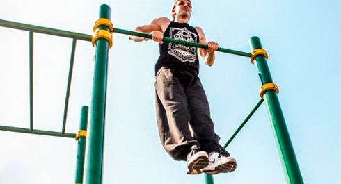

Yesterday we told you about dips and concluded that there is one more exercise which you must be aware of if you have choose to go Street Workout for life!
Muscle-Ups
IMPORTANT!!!
The information in the infoposts this week is given for illustrative purposes and for extending your outlook (if you do have an educational program). We recommend using it AFTER the program.

We believe that muscle-up is the transition from general physical conditioning to Street Workout world. This exercise truly works (because it unites pull, push and ligament training). It is the key connecting exercise between different combinations on the pull-up bars, parallel bars or any other constructions.
If you strat your training way with our 100 Days Workout programm, then probably it is too early for you to try muscle-ups, and this information post is to a greater extent for you to know about it. In fact, we would recommend to start learning muscle-ups only when you have already got some results in pull-ups (20 reps), dips (30-40 reps) and push-ups (60-70 reps). This way you will save a lot of time and also protect your elbow joints and ligaments from injuries.
Key points
1. The greater the movement amplitude is, the more muscles are involved into the process.
2. To do muscle-ups, you should bring your wrists above the bar.
3. Try to do the exercise as if you want to lower the bar in front of you. That's it! You DO NOT pull yourself up to the bar or the bar down to you, but you try to lower it in front of yourself.
Safety issues
Doing muscle-ups your wrists, hands, shoulder and elbow joints, as well as radiocarpal joint are extensively involved, therefore it is very important to follow the right technique:
1. You should move in the natural trajectory.
2. You should keep muscles under tension during the whole movement (espesically in the negative phase).
3. If you experience any negative feelings, try other ways of doing this exercise, change the grips, etc.
This exercise has the following steps:
1. Dead hang on the bar.
2. Pull your body up (PULL-UP phase) by a sharp contraction of the muscles.
3. Bring your body above the bar (TRANSITION phase)
4. Push your body up from the bar (PUSH phase)
5. Freeze at the end point of the exercise
6. Bend your arms and lower your body to the bar
7. Move your body under the bar (TRANSITION phase)
8. Straighten your arms and return to your initial position
You can do this exercises in 2 ways:
Using explosive power. This way you do the highest pull-up possible, so your wrists will come above the bar and all you will have to do is to slightly rotate them and slightly extend your arms. This way DOES NOT incorporate ligaments much.
Using ligaments power. This way you do an explosive pull-ups and in the highest point you rotate your wrists using your ligaments strength, after you bring your body above the bar you push yourself up. This way DOES incorporate ligaments much, and you will feel it!
Useful advices
Grip width. Try to hold your elbows at shoulder level. At the very beginning this is the most adequate position for training, if your grip is wider or narrower, doing muscle-ups is going to be more difficult.
Arms. Do not press your body to the wrists and do not bend the arms extensively. If you see that you are pressing too close to the bar and can’t pull up over it, it means your arms are bent too much.
Swings, bursts and inertia. In your training you will do a lot of involuntary forward swings by your legs. This is a normal situation, but still try to do the muscle-ups only by the strength of your arms. In this way your muscles work more efficient, and the exercise looks more attractive.
One-handed muscle-ups. Many people say that you’d better start with training one-handed muscle-up with arms in sequence. But we hold the opinion that this provokes some wrong skills and creates additional load on the shoulders. Therefore, bend both elbows simultaneously!
Elbow joints, ligaments, tendons. Muscle-up is a very strength-demanding exercise for the elbow joints and tendons. Therefore, at the first stage this exercise can be painful for the elbows, although you should differentiate between “good” and “bad” pain. If there is something wrong, stop your training sessions.
Dead point. If you are stuck at the upper point (when the shoulders are above the bar) and can’t bring your body above the bar, try to do a swing with your legs (like a pendulum), and this will give inertia to your body and make the pressing part of the exercise easier.
BONUS!
We have designed a session program combining different exercises and preparing you for the muscle-ups. This program trains the muscles and movements which are extensively used, and feedback shows that it helped many trainees. So, you can also try it out: